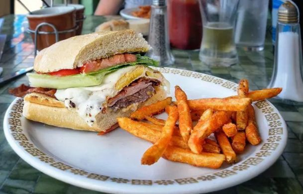

| کاربر گرامی به صفحه ی آشپزی اردبیل فود خوش آمدید. | |
|---|---|
| صفحه ی اصلی |
آشپزی:
تعریف:
هنر و فناوری تهیه غذا با استفاده از روشهای مختلف حرارتی و غیرحرارتی
اهمیت:
آشپزی نه تنها نیاز اساسی انسان به غذا را تأمین میکند، بلکه یک هنر و فرهنگ است که در جوامع مختلف جایگاه ویژهای دارد.
| انواع:
آشپزی در سبکهای مختلفی مانند آشپزی ایرانی، فرنگی، مدیترانهای و ... وجود دارد که هر کدام ویژگیها و تکنیکهای خاص خود را دارند.
سرآشپز (Chef):
نقش:
سرآشپز مسئولیت نظارت بر کلیه فعالیتهای آشپزخانه، طراحی منو، کنترل کیفیت غذا، آموزش آشپزهای دیگر و ایجاد نوآوری در غذاها را بر عهده دارد.
ویژگیها:
سرآشپزها باید دارای مهارتهای فنی بالا، خلاقیت، دانش گسترده در مورد مواد غذایی و تکنیکهای آشپزی، و توانایی مدیریت تیم باشند
مسیر شغلی:
برای تبدیل شدن به یک سرآشپز موفق، نیاز به تجربه، آموزش حرفهای و گذراندن دورههای تخصصی در زمینه آشپزی است.
انواع سرآشپز:
سرآشپز اجرایی (Executive Chef): بالاترین مقام در آشپزخانه، مسئولیت کلیه امور را بر عهده دارد.
ویژگیها:
سرآشپزها باید دارای مهارتهای فنی بالا، خلاقیت، دانش گسترده در مورد مواد غذایی و تکنیکهای آشپزی، و توانایی مدیریت تیم باشند
مسیر شغلی:
برای تبدیل شدن به یک سرآشپز موفق، نیاز به تجربه، آموزش حرفهای و گذراندن دورههای تخصصی در زمینه آشپزی است
|
| ارتباط با مشاوران | |
| ارتباط با ما | |
| گالری غذا ها | |
| نمونه ویدئو آشپزی | |
| تکمیل فرم جهت ثبت نام دوره آشپزی | |
| کاربر گرامی و همشهری محترم توجه فرمایید که سایت تکمیل فرم برای ثبت نام دوره فقط در استان اردبیل میباشد و همچنین زمان باز شدن سایت از مورخه ی 8مرداد ماه شروع شده وتا تاریخ 15مرداد ماه پایان خواهد یافت | |